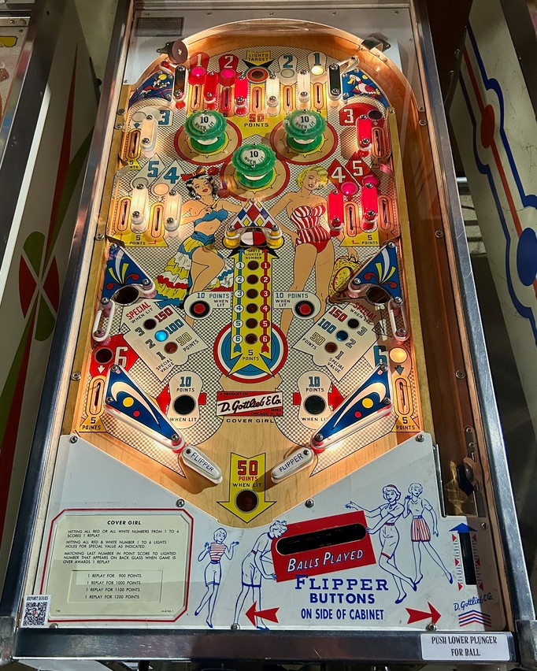

The main goal of Cover Girl is to collect the numbers 1 through 6 in either red or white. The red numbers can be found at: 1 and 2 at the left top lanes, 3-4-5 at the upper right side lanes, and 6 in the left out lane. The white numbers are in symmetrically opposite positions, with 1 and 2 in the right top lanes, 3-4-5 in the upper left side lanes, and 6 in the right out lane. Making any of these lanes when lit scores 5 points and collects the corresponding number. Collecting all of 1-6 of one colour in the course of a game scores a Special. Collecting all of 1-6 of both colours lights the gobble holes in the lower left and lower right for up to 3 Specials.
The center top lane scores 50 points and activates the center "split target". 1-point switch hits anywhere in the game rotate which number is selected at the center target. Hitting the left side of the center target spots the selected number in white, and hitting the right side of the center target spots the selected number in red. The center target scores 5 points, no matter which side is hit or whether or not it is active at all.
Pop bumpers score 1 point, or 10 when lit. One bumper is lit at a time, rotating based on 1-point switch hits.
The gobble holes in the lower left and lower right scores 50, 100, or 150 points. Making anything that scores 5 points (rollover lanes or the center target) changes the value of the gobble holes. If all 12 numbers are collected around the game, the gobble holes score 1, 2, or 3 Specials instead of 1, 2, or 3 batches of 50 points.
There are no in lanes, Flippers back up directly to the slingshots. Slingshots score 1 point or 10 when lit, and alternate based on 10 point switch hits. Out lanes award the #6s in red (left) and white (right) and score 5 points. Draining the ball scores 5 points or 50 when the drain is lit, which alternates based on 1 point switch hits. There is no extra ball feature or end of ball bonus. Tilt ends game.
The below picture of Cover Girl's playfield was taken from the Pinside, where it has image ID #3890688.
